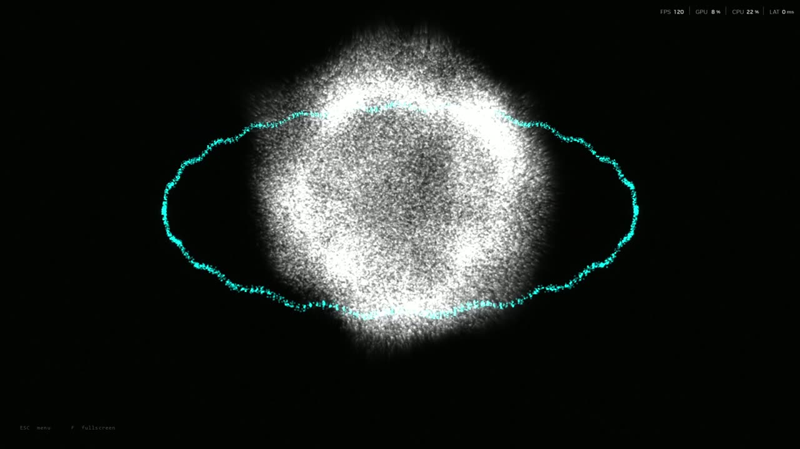

Live club visuals · handmade · offer
RekordboxLink
Audio-reactive visualizers that move with the music on your floor. Every kick, snare, build-up and drop, live, on your screens.

The demo · 2 min 11 s · sound on
See it run
How it works
Music in, light out
The DJ plays
rekordbox, Spotify, or the mixer's output plugged into the laptop. Nothing changes in the booth.
It listens
The software hears the bass, the kick, the snare and the hi-hats, finds the tempo, and feels a build-up and the drop coming.
The screen answers
A projector or LED wall shows the visualizer in real time, 60 frames a second, with no delay you can see.
No timeline to program, no VJ needed every night. The music drives it.
Handmade samples · new ones made to order
Visualizers
Every visualizer shown here is handmade: each one designed by hand. They are samples of what is possible, and I can always make more, including visualizers built for one event. Each one hears the bass, kick, snare, hi-hats and the build-up to the drop, and answers in its own way. One key switches between them during the night. The Song DNA ones were each made for a single song: that is what a visualizer for your event looks like. Open one to watch it with sound.
Case study · dark melodic trap
Built for the genre
I measured MITRO’s “3lifestyle” and its video, then designed a visualizer around what the sound and the room actually do. The clip plays that track.
Track: MITRO, “3lifestyle” (2026), produced by Vitaliy Koshin. The numbers on the left are measured from it. The same method works for your resident's sound or a headliner's.
For your club
What I offer
Install
- The software with the visualizers shown here, and new ones as they come
- Your logo or pictures in Image Waves and Scan Portrait
- Set up on your venue PC and screens, tuned to your sound system on a test night
Your own visualizer
- Everything in Install
- A visualizer designed for your club: your colours, logo and footage of your space
- Two rounds of changes before opening night
Event
- A visualizer made for one night or a residency
- Built around the headliner's sound, like 808 Chrome
- On-site support for the night
A normal Windows PC and the screens you already have. No extra gear in the booth.
rekordbox, Spotify, any DJ software, or a line from the mixer.
Quoted per project, after a short visit to the venue.
Next step · a test night on your floor
AntoniMarek
I build visual systems that react to sound, from club visuals to interactive installations. Let's try it on your sound system.